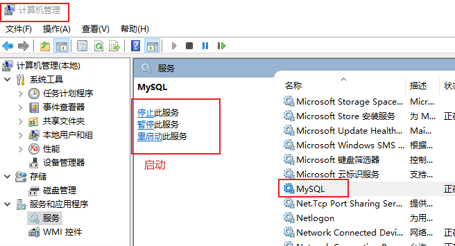

D:\MySQL\MySQL8.0\bin>mysqld install The service already exists! The current server installed: D:\mysql-5.7.24-winx64\bin\mysqld MySQL
1 2 3 4 5 6 7 8 9
D:\MySQL\MySQL8.0\bin>sc query mysql
SERVICE_NAME: mysql TYPE : 10 WIN32_OWN_PROCESS STATE : 1 STOPPED WIN32_EXIT_CODE : 0 (0x0) SERVICE_EXIT_CODE : 0 (0x0) CHECKPOINT : 0x0 WAIT_HINT : 0x7d0
删除原来设置的mysql：
1 2
D:\MySQL\MySQL8.0\bin>sc delete mysql [SC] DeleteService 成功
重新安装：
1 2
D:\MySQL\MySQL8.0\bin>mysqld install Service successfully installed.
4.2、别忘记启动mysql
到了这步你也许发现直接 NET START mysql 是会报错的
这可能是因为没有启动mysql 
搜索”计算机管理”，找到”服务”，看是否是这里有问题，改为自动即可。
此时就能成功登录了，输入以前设置的用户名密码：
1 2 3 4 5 6 7 8 9 10 11 12 13 14 15
D:\MySQL\MySQL8.0\bin>mysql -u root -p Enter password: ********* Welcome to the MySQL monitor. Commands end with ; or \g. Your MySQL connection id is 15 Server version: 8.0.28 MySQL Community Server - GPL
Copyright (c) 2000, 2022, Oracle and/or its affiliates.
Oracle is a registered trademark of Oracle Corporation and/or its affiliates. Other names may be trademarks of their respective owners.
Type 'help;' or '\h' for help. Type '\c' to clear the current input statement.